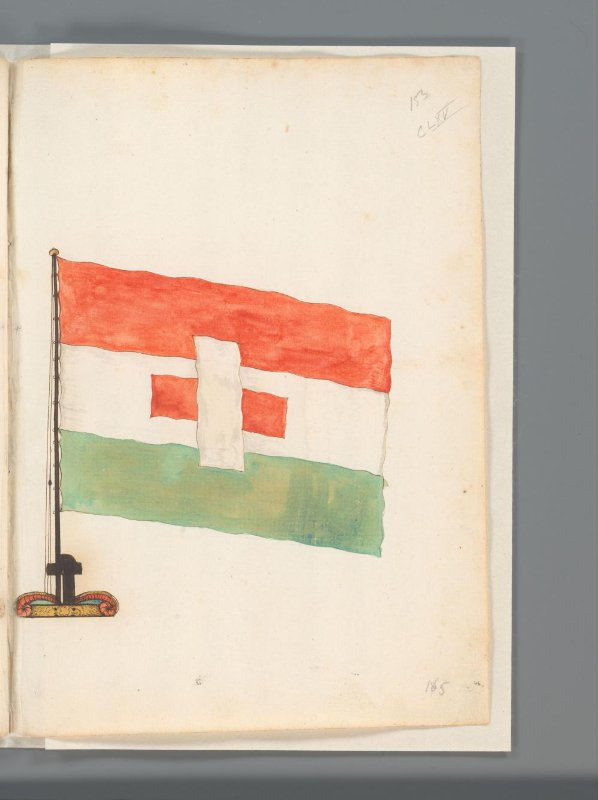
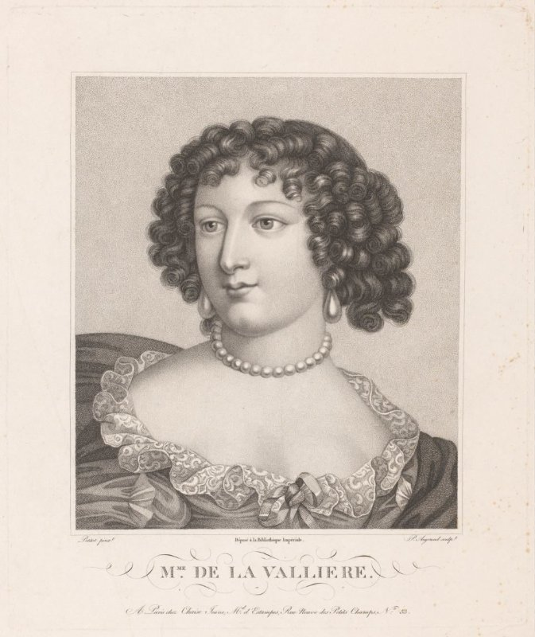
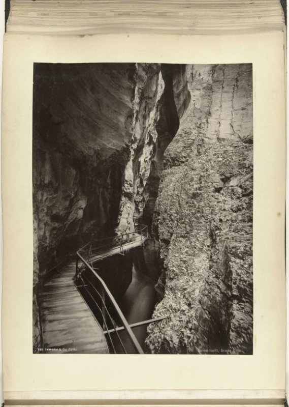
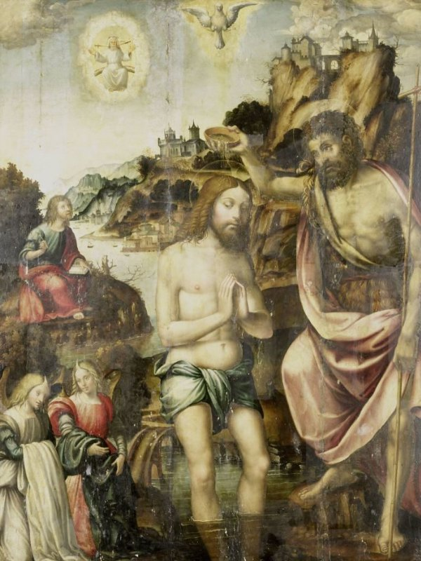
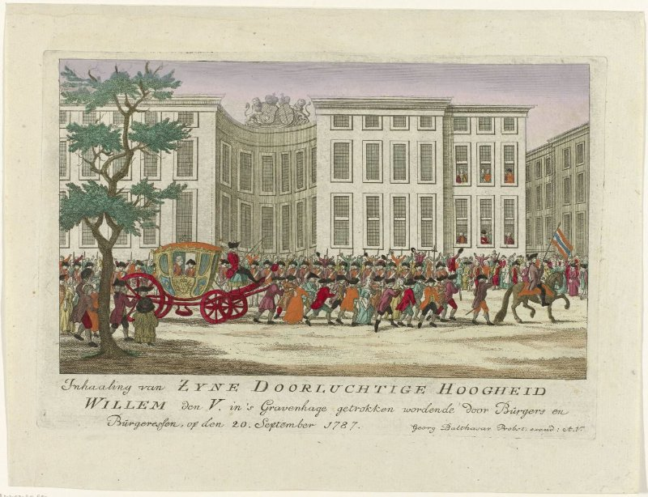
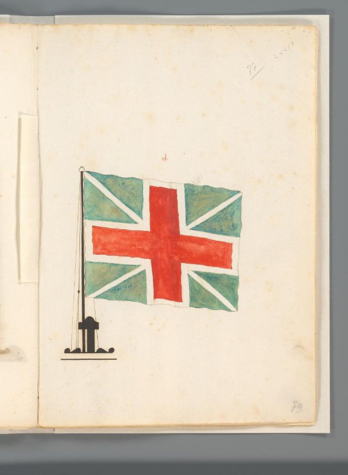
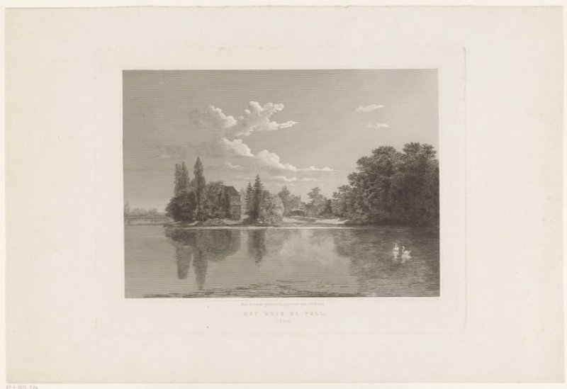
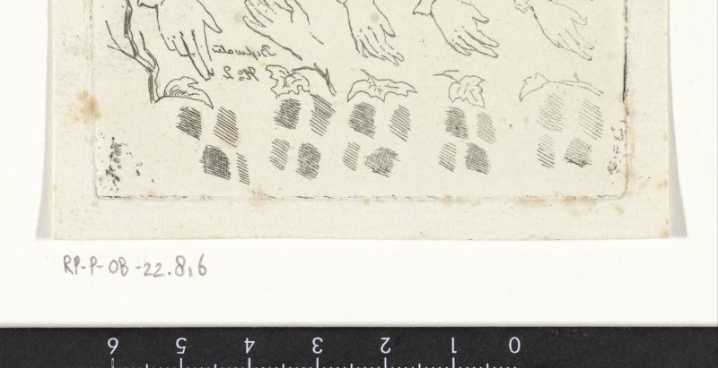

https://id.rijksmuseum.nl/200362284 · drawing · Δ = +0.489

Vérité (projetée)
41C741(+1) — (no own text)
T_star (H-F1 0.143)
31A235 — sitting figure
4 — Society, Civilization, Culture
T-H (H-F1 0.632)
31A235 — sitting figure
41C741 — pipe ~ tobacco

Vérité (projetée)
44A3 — flag, colours (as symbol of the state, etc.)
T_star (H-F1 0.889)
44A31 — banner, standard (as symbol of the state, etc.)
T-H (H-F1 0.250)
45D1 — (military) flags and standards

Vérité (projetée)
61B2 — historical persons
41D26611 — pearl; pearl necklace
T_star (H-F1 0.769)
3 — Human Being, Man in General
41D26611 — pearl; pearl necklace
48C — the arts; artists
61BB — historical persons (portraits and scenes from the life) - BB - woman
T-H (H-F1 0.154)
4 — Society, Civilization, Culture

Vérité (projetée)
25H1122 — ravine, chasm, abyss, canyon
T_star (H-F1 0.615)
25H1 — landscapes in the temperate zone
61 — historical events and situations; historical persons
T-H (H-F1 0.000)
(vide) — (no own text)
Vérité (projetée)
41C741(+1) — (no own text)
T_star (H-F1 0.143)
31A235 — sitting figure
4 — Society, Civilization, Culture
T-H (H-F1 0.632)
31A235 — sitting figure
41C741 — pipe ~ tobacco

Vérité (projetée)
41A33 — window
41A422 — hangings and drapery
T_star (H-F1 0.667)
41A421 — curtains
41A422 — hangings and drapery
48C8 — the arts of the stage: ballet, theatre, musical drama, motion picture
T-H (H-F1 0.200)
48 — art

Vérité (projetée)
73C121 — baptism of Christ in the river Jordan: John the Baptist pouring out water on Christ's head: the Holy Ghost descends
T_star (H-F1 0.800)
11 — Christian religion
73C121 — baptism of Christ in the river Jordan: John the Baptist pouring out water on Christ's head: the Holy Ghost descends
73E — events from Resurrection to Pentecost (Matthew 28; Mark 16; Luke 24; John 20-21; Acts 1:3-11); Mary's and Joseph's death
T-H (H-F1 0.364)
11H — saints
73 — New Testament

Vérité (projetée)
43A4123 — public festivities at other royal events, not meant or mentioned above
46C128 — human being(s) drawing or pushing a vehicle not usually propelled by manpower
T_star (H-F1 0.560)
41A1 — civic architecture; edifices; dwellings
43 — recreation, amusement
46C128 — human being(s) drawing or pushing a vehicle not usually propelled by manpower
46C1442 — four-wheeled vehicle drawn by two animals
T-H (H-F1 0.125)
41A1 — civic architecture; edifices; dwellings

Vérité (projetée)
44A3 — flag, colours (as symbol of the state, etc.)
T_star (H-F1 0.667)
2 — Nature
44A3 — flag, colours (as symbol of the state, etc.)
45D1 — (military) flags and standards
T-H (H-F1 0.250)
45D1 — (military) flags and standards

Vérité (projetée)
41A16 — rural housing, e.g. country-house, villa, cottage
T_star (H-F1 0.167)
25H21 — water course
25I — city-view, and landscape with man-made constructions
4 — Society, Civilization, Culture
T-H (H-F1 0.571)
25H21 — water course
41A1 — civic architecture; edifices; dwellings

Vérité (projetée)
31A2245 — hand
T_star (H-F1 0.400)
31 — man in a general biological sense
4 — Society, Civilization, Culture
T-H (H-F1 0.000)
4 — Society, Civilization, Culture

Vérité (projetée)
47C55 — sharpening, grinding (industrial processes)
44C312 — political caricatures and satires
T_star (H-F1 0.182)
4 — Society, Civilization, Culture
T-H (H-F1 0.571)
44C3 — politics

Vérité (projetée)
11H(PAUL) — the apostle Paul of Tarsus; possible attributes: book, scroll, sword
T_star (H-F1 0.615)
11H(PAUL) — the apostle Paul of Tarsus; possible attributes: book, scroll, sword
11H(PETER) — the apostle Peter, first bishop of Rome; possible attributes: book, cock, (upturned) cross, (triple) crozier, fish, key, scroll, ship, tiara
71 — Old Testament
73F — lives and acts of the apostles of Christ; epistles
T-H (H-F1 1.000)
11H(PAUL) — the apostle Paul of Tarsus; possible attributes: book, scroll, sword